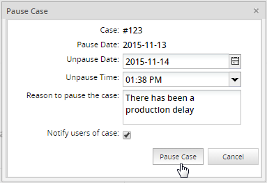
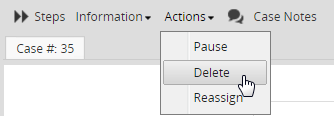
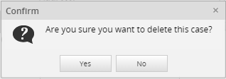
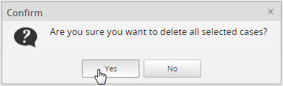
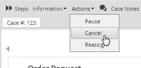
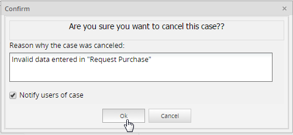
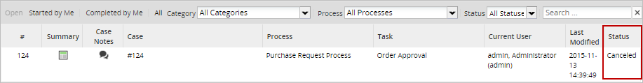
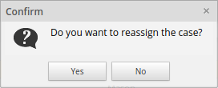
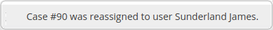
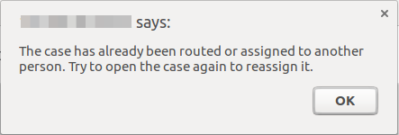

Actions
The Actions option shows actions that can be done to the current case after the first task.

The Actions menu is available when starting a new case or when opening the case from the Inbox, Draft, or Paused folders. Depending on the user's permissions and on the case status, the Actions menu can have the following options:
Pause
A selected case from the list can be paused by clicking on the calendar icon. As the image below shows, a calendar will be displayed where the date when the case will be unpaused must be defined

Note 1: Unpausing a case will cause the due date for the current task to be recalculated, starting from the time when the case was unpaused.
Note 2: It is necessary to have the cron configured, since this action depends on cron execution; if not, the only way to unpause a case is by doing it manually.
Delete
If a case is still in its first task, it can be deleted and its record will be removed from the database. By default, only the user currently designated to work on the case has the right to delete the case. If other users need to delete the case, then assign them a role with the PM_DELETECASE permission and give them process permission to be able to open the case. They may also need the PM_ALLCASES permission in their role to be able to find the case under Home > Advanced Search.
Deleting an Open Case
To delete a case, open the case and select the Delete option from the Actions menu.

A popup dialog will appear to confirm whether the cases should be deleted or not.

Click on Yes to delete the case.
Deleting from a List of Cases
Cases can also be deleted by going to HOME > Drafts and selecting the case to be deleted. To select more than one case, hold down the CTRL or SHIFT key while clicking on cases in the list. Then right click on the selected cases and choose Delete from the dropdown menu.

A question box will appear to confirm whether the cases should be deleted or not.

Click on Yes to delete the cases.
Cancel
Once the case has moved onto a subsequent task, it is no longer possible to delete it using the ProcessMaker interface. Instead, the case can only be canceled, meaning that its status will be changed to CANCELED in the database, so it won't be available to be worked on.
The cancel case action is based on the permission PM_CANCELCASE, which allows a user to cancel cases that have been assigned to them - cases that they have participated in and can search as a process supervisor under Home > Review. This means:
- If a user has permission to see only the cases that they are assigned to, then they will be able to cancel those cases.
- If a user has the PM_ALLCASES permission in addition to the PM_CANCELCASE permission, the user will be able to cancel any case through Advanced Search.
- If a user has the PM_SUPERVISOR permission in addition to PM_CANCELCASE, the user will be able to cancel all the cases that are in the review case list (where the cases of the process where they are supervisor will be displayed).
To cancel a case, open the case and select the Cancel option from the Action menu as seen in the image below:

A new window will open where the reason to cancel the case must be filled in.

A quick message will be shown at the bottom right side of the window indicating that the case has been canceled.

As it was explained before, once the case is canceled, it will be displayed in the Participated list of the user who canceled the case:

A case will only be able to be canceled if it fulfills the following requirements:
- The case has the
To Dostatus.Draftcases cannot be canceled. - Cases in the first task cannot be canceled, even if the current user has Process Supervisor permissions. Cases can only be canceled after the second task.
- Only users who have participated in the case are able to cancel it.
- A case can't be canceled if more than one parallel thread is being executed (e.g. while using parallel gateways, parallel tasks and/or inclusive gateways).
- The last user designated to work on the case and any user who has Process Permissions may still open the canceled case in read-only mode by going to Home > Participated (or Home > Advanced Search if the user's role includes the PM_ALLCASES permission). However, the case data and associated files may no longer be changed.
Reassign
A selected case from the list can be reassigned, which means that the owner of the case will change. Paused cases cannot be reassigned, therefore this option will be disabled if the case is paused.
If a user other than the admin needs to reassign a case, then it's necessary to assign them a role with the PM_REASSIGNCASE permission included.
To reassign a case, open the case and select the Reassign option from the Action menu. A window will display a list of available users; choose the one who will be the owner of the case, complete the Reason to Reassign this Case field and check the box if you want to notify the users about the case reassignment. Finally, click on Reassign:

A confirmation dialog will be displayed:

When the case is reassigned, a message will be displayed at the bottom of the screen.

Take into consideration the following points:
- If the task is configured to send an automatic notification to the next assigned user, reassigning the case will NOT send out that notification. Likewise, it won't execute any triggers associated with task assignment.
- Reassigning a case will cause the due date of the current task to be recalculated based on the time when the new user was assigned to the case and the new user's calendar.
- If there a supervisor opens a case reassign window, while another user routes this case. Then the supervisor tries to reassign the case, the following message will be displayed:
